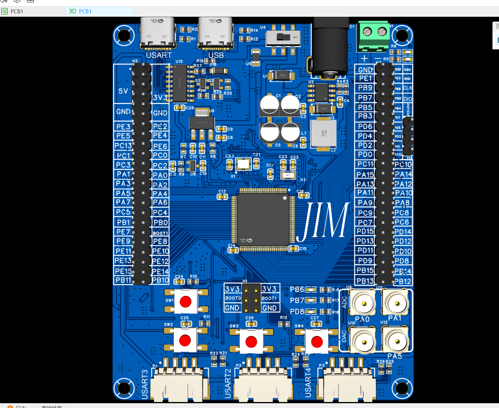
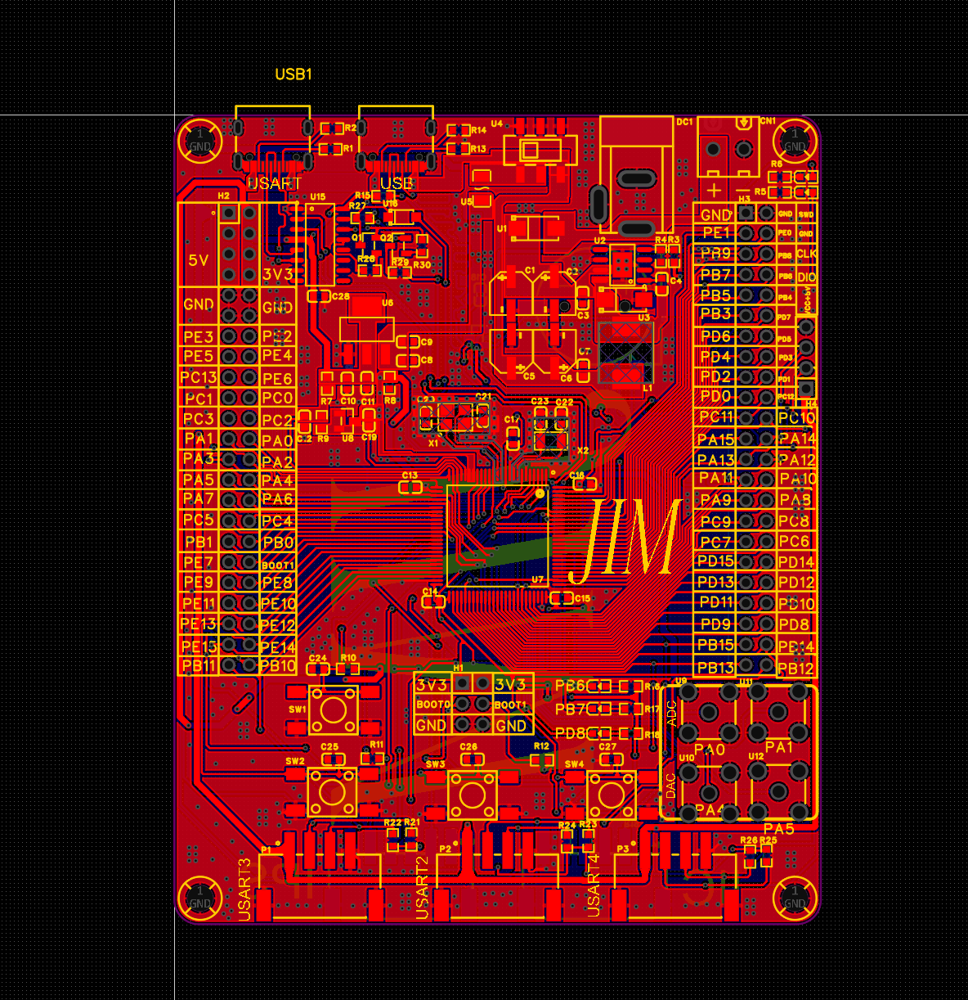
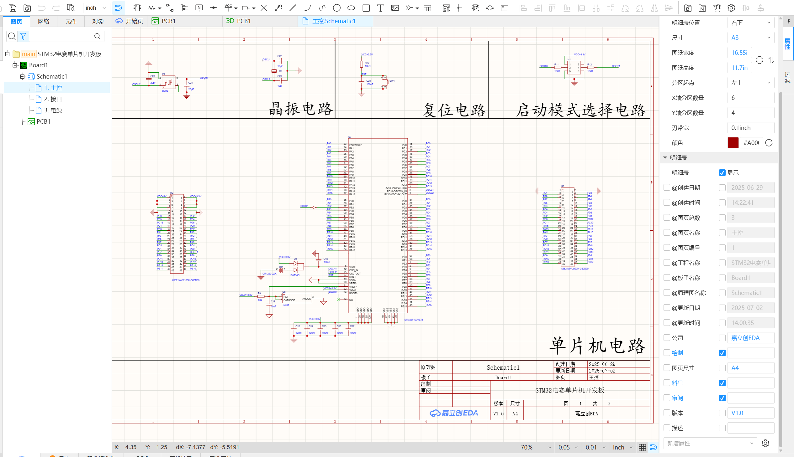
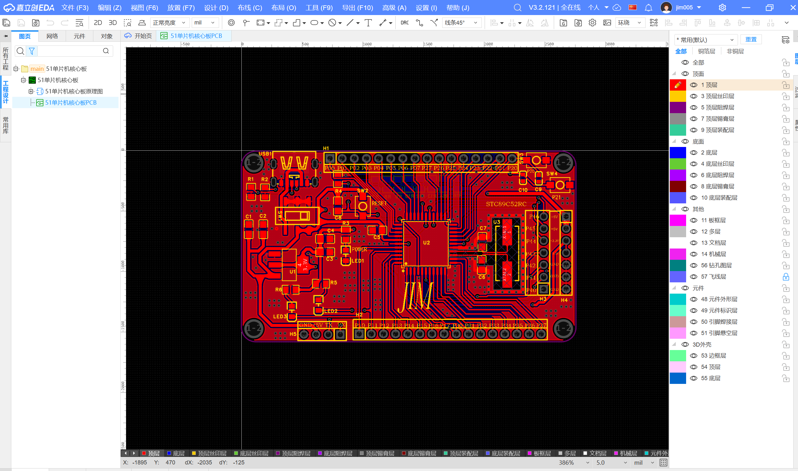
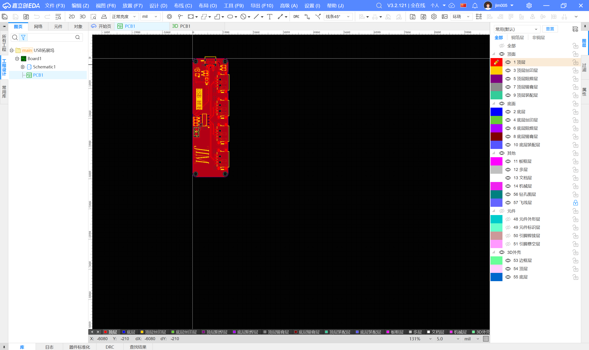

Branch 01
原理图规划与硬件结构设计
在正式布线之前，我先把硬件结构和使用场景想清楚，避免后面返工。
- 独立完成原理图绘制、器件选型、封装匹配和电路结构规划。
- 围绕项目验证、外设拓展和嵌入式学习需求进行模块安排。
- 通过网络检查和接口预留，为后续功能验证留出余量。
Hardware / PCB
这是我在硬件方向上很值得单独展开的一个项目集合。 它覆盖了从原理图绘制、器件选型、封装匹配、PCB 布局布线，到打样下单、焊接调试和上电验证的完整流程， 能比较直接地说明我不只是会写 MCU 程序，也能把硬件平台真正做出来。

这个项目不是单一成品，而是围绕 STM32 开发板、51 开发板和功能拓展坞形成的一组 PCB 设计与调试实践。 它的价值在于把“设计文件”和“实物板卡”之间的链路真正走通。
对外展示时，这类项目特别适合用长页面，因为它本身就是多阶段内容：原理图规划、PCB 布线、打样落地、焊接调试、功能验证。
我基于项目验证、外设拓展和嵌入式学习需求，独立完成 STM32 开发板、51 开发板及硬件拓展坞设计，覆盖原理图绘制、器件选型、封装匹配、网络检查与电路结构规划。
同时，我负责 PCB 布局布线、走线优化、丝印整理、DRC 检查、Gerber 文件输出与打样下单，并对板卡进行焊接、上电测试和接口验证。
Branch 01
在正式布线之前，我先把硬件结构和使用场景想清楚，避免后面返工。
Branch 02
这部分是从图纸走向实体板卡的关键阶段，我需要兼顾结构、可制造性和后续调试便利性。
Branch 03
拿到板之后，关键不是“焊完就结束”，而是让它能稳定工作，并能继续服务后续项目开发。
这里已经接上真实的 EDA 截图，分别展示了布局布线、3D 外观和不同板卡版本。




如果你以后补视频，这个项目会更有说服力，因为硬件调试过程本身就很适合用动态内容证明真实性。